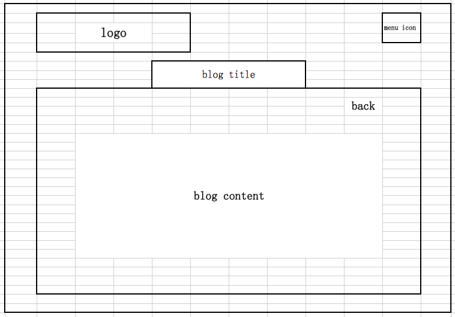
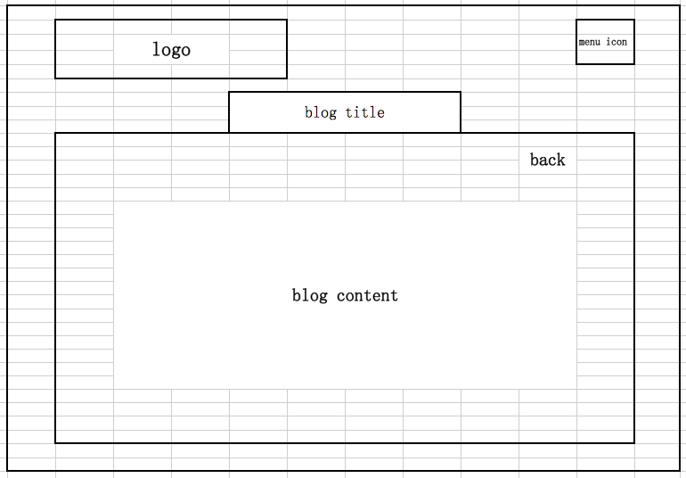

What a responsive site is, and why responsiveness is important
The responsive site is the site adapts specific styles on different devices,the site still looks good.
Nowadays mobile devices are popular in people's daily life, people grab infomation by phones,tablets. It is important the websites where people go for infomation are responsive,easy to read and important information highlighted.Otherwise people may not visit your site again if they can't get what they need, or dont enjoy visiting your site.
What mobile first design is, and why it's important
Mobile first design is,we design the website starting from the concept of mobile,design how the webpage looks like on the mobile device.
The reason why mobile first is so important is there are about 1.2 billion mobile web users worldwide. Also the sales of mobile devices are increasing 85% over the board, there are still more and more new mobile devices coming up each year. Mobile devices are the main source for daily life including web browsing. Because of those, we need to focus on the main stream to offer our visitors most valuable information they need, and offer the best user experience.
What frameworks are, and their pros and cons
Framework,from the word we know it is a structure we could build stuff on.It is pre-defined sets of style or functions the framework developers did for us.They may spent hours and lines of codes to fomulate it, then other people can use straight away and get the same result in a minute. Framework makes users to get the job done easier and faster.We just need to follow the rule the framework defined, then we will be good to go.
PROS
- Efficient
- Security
- Cost free
- Support
- Limitation of learning the language
- Code is public
What a wireframe is and why we use it
Wireframes are simple black and white layouts of the website.Defines the size and features. It is like a blue print of a house. where we can easily see the structural placement.
There are reasons I saw oneline I am quite agree with,Wireframes alow:
- Test and refine navigation
- See how content lays out on the page
- Study and rapidly refine the user interface design of web forms and interactive elements
- Evaluate overall effectiveness of the page layout against usability best practices
- Determine web development/programming requirements
I am quite happy with the mobile phone's layout, and there isnt any difficulty to implement the wireframe.
The desktop pages looks not that good,too much emputy spaces.I don't have many content to display.
 
